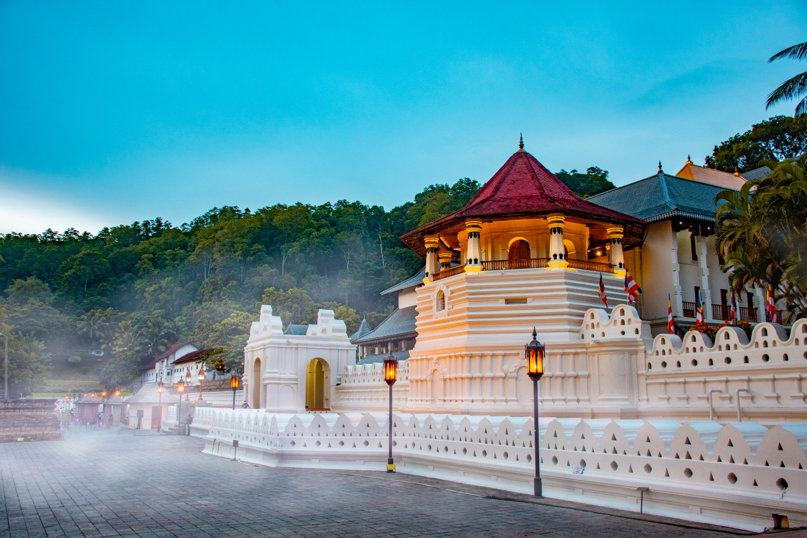

A LITTLE ABOUT USCuriosity is
Curiosity is
our compass.
Serendib Trails is a student-created tourism concept celebrating the spirit of Sri Lanka.

OUR STORY
Made to make you wander.
We created Serendib Trails as a digital tourism analytics group project. Our concept brings island experiences to life through thoughtful visuals, clear storytelling and data-informed digital marketing.
This site is not a licensed travel provider and does not process reservations. Its enquiry interactions demonstrate how tourism websites can measure user interest and improve marketing decisions.
What we believe
Curiosity, cultural respect, care for nature and better journeys begin with information.
Get in touch